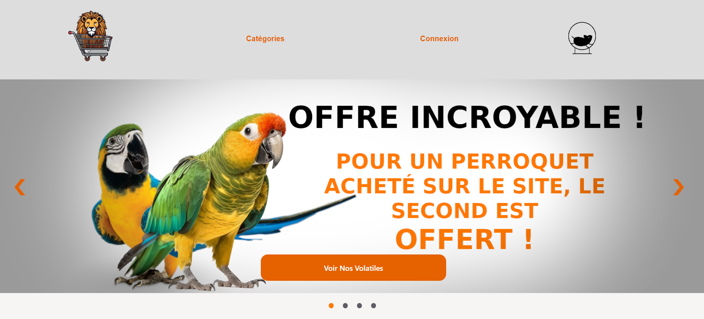

un programme ce basant sur la methode César et permettant de changer chaque lettre d'un message afin de soit coder ce message soit le décoder
Etant passionné par le sudoku, mon premier réflexe lors de mon apprentissage de python a été d'essayer de coder un sudoku seul. Malheureusement ce projet n'as pas été totalement finalisé car j'ai rencontré des problemes au niveau de la partie graphique mais reste fonctionnelle.
Dans le cadre d'un évenement nommé la nuit du code, lors de mon année de terminal durant 6H j'ai pu coder un platformer en python.
Lors d'un projet de développement web, avec deux camarades j'ai pu m'initier a la programmation web en implémentant un site internet de vente de produit informatique.
Lors d'un projet de développement web, avec 4 camarades j'ai pu approfondir et mettre en oeuvre les compétences que j'ai pu aquérir en programmation web en implémentant un site internet de vente d'animaux exotiques pure.
Lors de mon année de 3ème j'ai eu la chance de faire un stage d'immersion en milieu professonnelle dans une entreprise de réparation informatique. Cette première impression ma par la suite guider vers une carriere dans le milieu de l'informatique
Pendant mon temps libre il m'est arrivé de a de nombreuse reprise d'assister mon frère dans ses réparations ou néttoyage de smatphones ou autres appareil ce qui m'a permis d'acquérir de la patience et de la dextérité. De plus j'ai pu souvent aider mon père a son restaurant entant que serveur ou j'ai pu y apprendre le travail sous préssion.
Ma passion pour l'informatique est en partie lié a l'univers des jeux vidéosquiu m'ont accompagné toute mon enfance et continue encore a m'accompagner, notamment actuellement le jeu Valorant qui m'a permis de communiquer en anglais avec d'autre européen mais également d'apprendre a gérer une équipe et garder mon sang froid lors d'une situation critique.
Je suis également passionné par de sport, plus précisement les sports de combats tel que la boxe thai ou le MMA. Ayant pu pratiquer ces sports pendant plusieurs années, j'y ai acquis un calme et une bonne discipline. J'ai pu commencer la compétion de boxe thai en tant que débutant et j'espere pouvoir continuer en parallèle de ma carière en informatique.